出发，就可以造出无穷多个无理数，如：1＋
出发，就可以造出无穷多个无理数，如：1＋第二章 庞大的无理数家族
无理数也是无穷无尽的，它们比起有理数来要多得多。
除了
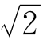
，还有哪些无理数呢？从出发，就可以造出无穷多个无理数，如：1＋
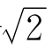
，2 ＋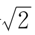
，3 ＋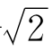
，…它们都是无理数；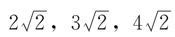
，…也都是无理数：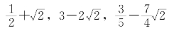
，…仍是无理数。也许你会说，你怎么知道它们都是无理数呢？一个一个地证多麻烦呀！其实，我们根本不用一个一个地证。不信，请看命题2：
[命题2] 如果r和s是有理数，r≠0，且a是无理数，那么ra＋s必是无理数。
证明 用反证法。若ra＋s是有理数，令ra＋s＝q，则q－s是有理数，
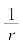
（q－s）也是有理数。由ra＋s＝q解出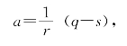
于是推出a是有理数，和已知矛盾。所以，ra＋s应是无理数。
你看，由命题2我们可以知道，当a＝
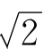
时，上面提到的 1＋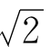
，2 ＋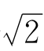
，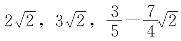
，…都是无理数。也就是说，只要有一个无理数a，就可以造出无穷多个无理数来。无理数是不是都要带个
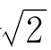
呢？当然不是。就在人们发现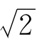
不是有理数之后不久，希腊数学家塞阿多斯（公元前470年左右），就证明了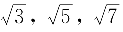
，…，都是无理数。于是，像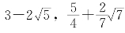
等这类的数，也都是无理数。下面我问你，无理数开平方如
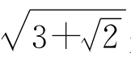
是不是无理数呢？我们的结论是：是的。请看：[命题3] 若a是无理数，k是正整数，则
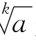
是无理数。证明 用反证法。若
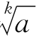
＝q是有理数，则可推出a＝qk是有理数，与已知矛盾。所以，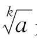
是无理数。用类似于证明命题2和命题3的方法，很容易证明：若a是无理数，则
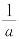
也是无理数。进一步可以证明，若a是无理数，m，n，p，q是有理数，则当mqnp≠0时，比值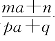
也是无理数。（证明留给读者做练习）不过，两个无理数相加，可就不一定是无理数了。例如 3＋
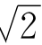
和 3－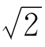
，这两个无理数之和为6，是有理数。类似地，两个无理数的差、积、商，可能是无理数，也可能是有理数。但是，像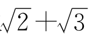
这类数是无理数。请看：[命题4] 若a，b是正的有理数，
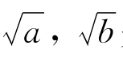
是无理数，则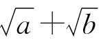
也是无理数。如果a≠b，则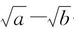
也是无理数。证明 用反证法。设
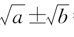
＝r是有理数，且r≠0，则±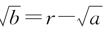
，两端平方得
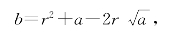
解出
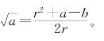
于是推出
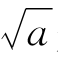
是有理数，这和已知矛盾，从而命题结论成立。现在我们已经知道了，从整数出发，反复进行有限次的＋、－、×、÷、开平方这5种运算，可以得到许多无理数。这样得到的无理数，可以说是最简单的无理数了。我们从长度为1的线段出发，使用圆规和直尺，可以画出长度等于这类无理数的线段来。这是因为：
（1）有了长为a，b的两条线段，容易作出长为a＋b，a－b的线段来。（你会作吗？）
（2）有了长为a，b的两条线段，又有了长为1的线段，可以作出长为ab的线段来。（提示：如图2-1，PQ⊥MN，∠1＝∠2，PO＝a，QO＝b，MO＝1，则NO＝ab。）
（3）在图2-1中，如果取PO＝1，QO＝b，MO＝a，那么易知NO＝
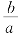
。也就是说，有了长为a，b的两条线段，又有了长为1的线段，可以作出长为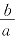
的线段来。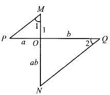
图2-1
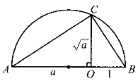
图2-2
（4）有了长为a的线段和长为1的线段，可以作出长为
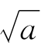
的线段。其方法是：如图2-2，先作出长为a＋1的线段AB，在AB上取O，使AO＝a，BO＝1。以AB为直径作半圆，再过O作AB的垂线与半圆交于C。因半圆的圆周角∠ACB是直角，故知△AOC∽△COB，从而推出CO＝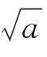
。对这类无理数——从有理数出发，经过多次开平方、四则运算而得到的无理数——我们不妨叫做尺规可作的无理数。
有没有尺规不可作的无理数呢？有。事实上，尺规可作的无理数，不过是庞大的无理数家族中小小的一支而已。
在人们比较熟悉的尺规不可作的无理数当中，最古老的大概要算
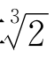
了。说起来，它和有名的古代三大几何难题中的二倍立方体问题，紧紧联系在一起[1]。所谓二倍立方体问题，早在公元前300年左右就提出来了。传说在希腊一个名叫第罗斯的岛上，有一年突发瘟疫，许多人被夺去了生命。人们惊恐万分，只好去找巫神想办法。巫神说，只有把祭坛的体积加倍，才能使瘟疫不再流行。他们的祭坛是正方体形状。所谓祭坛体积加倍，就是要做一个新的正方体形状的祭坛，使它的体积是原来正方体祭坛的2倍。也就是说，新祭坛的棱长，应当是原祭坛棱长的
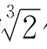
倍。于是，问题就归结为：有了长为1的线段，能不能用直尺、圆规画出长为
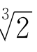
的线段？人们经过2000多年的研究，证明了这是不可能的。也就是说，
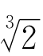
不但是无理数，而且是尺规不可作的无理数。一般说来，整数的高次方根，如果不是整数，就一定是无理数（证明并不难，此命题可作为第10页命题5的推论）。
于是，我们又得出一大批无理数，如
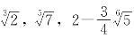
等。这些带有高次方根号的无理数，中间有不少是尺规不可作的无理数。从有理数出发，经过有限次的四则运算和开方运算所得的无理数，我们把它叫做可用根式表示的无理数。这是更大一些的无理数家族，它包含了尺规可作的无理数小家族。
有没有不能用根式表示的无理数呢？有。
我们学过二次方程式的求根公式。若x是一元二次方程式ax2＋bx＋c＝0的实根，则当a≠0，b2－4ac≥0时有
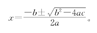
你看，当a，b，c是整数时，x或者是有理数（当
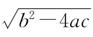
是整数时），或者是可用根式表示的无理数（而且是尺规可作的）。类似地，三次和四次方程式也有用根式表示的求根公式。如果系数是整数，它们的实根或者是有理数，或者是可用根式表示的无理数。
五次和五次以上的代数方程式，就没有一般的求根公式了。系数为整数的n（n≥5）次代数方程式的无理实根，只有一部分可用根式表示。如
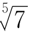
，它是五次方程式x5－7＝0的根。也许你会问，哪些代数方程式的根是无理数呢？请看命题5：[命题5] 若a0＝1，a1，a2，…，an都是整数，则n次代数方程式
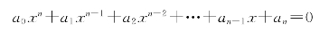
的实根，不是整数，就是无理数。[2]
证明 假设方程式有一个有理根x，我们来证明x一定是整数。
如果x＝0，就不用证了。若x≠0，可把x写成
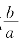
，这里a≥1，a和b是整数，且a与b没有大于1的公约数。把x＝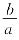
代入原方程得两边同乘以an－1，再移项得
这个等式左端是整数，右端的显然也是整数。这说明a能够整除bn，所以a的每个质因数都能整除b。又因为前面已设a和b没有大于1的公约数，故只有a＝1。这证明了x＝b，即原方程式的有理根都是整数，因而原方程的非整数实根都是无理数。
运用命题5，我们可以证明前面提到的这类数都是无理数。你看：当a1，a2，…，an－1均为0，an＝－m，且m为正整数时，方程式xn－m＝0至少有一个实根；而由命题5，如果不是整数，就一定是无理数。所以说，应用命题5，对有些代数方程式，不用求出它的根，就可以断定它的根是无理数。
[例] 方程式x5＋x＋1＝0的实根是无理数吗？
解 当x为0或正整数时，x5＋x＋1＞0。当x为负整数时，x5＋x＋1＜0。因此，方程式没有整数根。由命题5，可知它的实根是无理数。
所有整系数代数方程式的根，都叫做“代数数”。对代数数进行四则运算、开各次方，得到的仍是代数数。以代数数为系数的代数方程式，它的根仍是代数数。
有理数是一次整系数方程式的根，所以有理数也叫做一次代数数。
从二次整系数方程式的根中，去掉那些一次代数数，剩下来的叫做二次代数数。
用类似的办法，你可以定义三次、四次的代数数。一般地说，从n次整系数方程式的根中，去掉那些低于n次的代数数，剩下的叫做n次代数数。
各次实代数数，除了一次的之外，都是无理数。这些无理数，都是密密麻麻无穷多的。还有，在任意两个不同的有理数之间，都有各次的实代数数。
你看，尺规可作的无理数都是代数数[3]，可用根式表示的无理数也都是代数数，它们不过是全体实代数数中的一小部分；二次以及二次以上的实代数数，组成更大的无理数家族！
那么，无理数到这里是不是到顶了呢？换句话说，除了高于一次的实代数数，还有别的无理数吗？
有！无理数家族庞大得很，代数数在其中只占极小极小的一部分。全体实数中，除掉代数数（包括有理数），剩下的都叫做“超越数”。超越数当然是无理数，它们是无理数家族中最大的一族。
说也奇怪，超越数这么多，人们对它的认识却非常晚。第一个超越数是1851年法国数学家勒威耶发现的——比的发现晚了2300多年。圆周率π也是一个超越数。人们很早就在用π的近似值作计算了，但直到1882年，德国数学家林德曼才证明了π是一个超越数[4]。
证明一个数是超越数，往往是很难的，需要高深的数学知识。既然如此，又怎么知道超越数比代数数多得多呢？原来，要证明实数中有大量的超越数存在并不很难。下面我们简单地介绍一下超越数存在的证法。这个证法是德国数学家康托尔于1874年发表的。
我们知道，虽然全体自然数是无穷多的，但我们可以把它们一个接一个地排成一队：
1，2，3，4，5，6，7，8，…
每个自然数迟早都会在这个队伍中出现。如果一个无穷集合A，它的全体元素能按某种规律排成这样的一队：
a1，a2，a3，…，an，…
我们就说A是可数的。换句话来说就是：A的元素和自然数一样多。道理很简单：因为我们可以把它们和全体自然数配成对，1对a1，2对a2，…，n对an。这样的看法是有道理的。如果电影院里的每个观众有一个座位，每个座位有一个观众，当然观众就和座位一样多了。这种比较多少的方法叫做“一一对应”的方法。
例如，全体整数可以这样排成一队：
0，1，－1，2，－2，3，－3，4，－4，…，n，－n，…
所以，全体整数并不比自然数多。和自然数相比，它们是一样多的。
无穷的东西，可以和自己的一部分一样多。这是无穷和有穷不同的地方。
在数直线上，整数稀稀拉拉，有理数密密麻麻，似乎有理数要比整数多。其实不然，有理数也可以排成一队！道理是这样的：因为有理数都可以写成最简分数的形式（把整数也看成分母为1的分数）；把一个分数的分子、分母的绝对值加起来，叫做它的“标号”；标号都是正整数，而且标号相同的分数只有有限个；这就可以把全体有理数，按标号由小到大排成一行：
这样一排，便可看出有理数表面上声势浩大，其实不过和自然数一样多。
有理数不过是一次代数数，代数数里还有二次、三次以至n次的代数数。看来，全体代数数该比自然数多了吧？
不见得。全体代数数也可以排成一行！
排的方法并不难。代数数都是整系数代数方程式的根，n次代数方程式至多有n个根，所以，只要把所有的代数方程式排成一队，它们的根也就可以跟着排成一队了。我们把整系数n次方程式
a0xn＋a1xn－1＋…＋an－1x＋an＝0
的次数n和系数的绝对值｜a0｜，｜a1｜，…，｜an｜全部加起来，和数叫做这个方程式的“标号”；标号都是正整数，标号相同的方程式只有有限个；这就可以把方程式按标号由小到大排成一队，方程式的根也就可以排成一队了。这样排成的队里，包含了全体代数数，但可能有重复出现的数。这不要紧，重复的留下最前面的一个，其余的划掉就是了。
n＋｜a0｜＋｜a1｜＋…＋｜an｜
这说明，代数数不过和自然数一样多！
可是，你怎么知道代数数只是实数的一小部分呢？
我们有下列两个论断：
1.全体实数集是不可数的（也就是说全体实数比全体代数数多）。
证明 用反证法。如果全体实数能排成一行，我们把所有0到1之间的实数都排出来：
a1，a2，a3，…，an，…
其中每个an都可以写成＋进制无穷小数
的形式。
现在造一个这样的实数：
b＝0.b1b2b3…
让b1和不同，b2和不同，b3和不同……于是可以使b和a1，a2，a3，…，an，…中的每个都不同。也就是说，在a1，a2，…，an，…中没有把0到1之间的实数排完，故假设“全体实数能排成一行”不成立，从而原命题成立。
2.如果集A不可数，那么，从A中去掉一个可数的子集B之后，剩下的元素之集也是不可数的。
证明 用反证法。设剩下一个可数集C，由C中元素可数，则C中元素可排成一队：
c1，c2，c3，…，cn，…
又因为B中元素也可数，设它们是
b1，b2，…，bn，…
于是，我们可以把A中元素这样排出来：
b1，c1，b2，c2，b3，c3，…，bn，cn，…
从而可得A也是可数的。这与已知矛盾，因而数集C是不可数的。证毕。
根据这两个论断，可知全体超越数之集是不可数的。因为全体代数数可数，而实数不可数（论断1），从实数中去掉全体代数数，剩下的当然是不可数的了（论断2）。也就是说，超越数是不可数的！
不可数的当然比可数的要多得多，所以，超越数比代数数多得多。
练习题二
1.求证下列各数都是无理数：
2.求证：若a是无理数，则也是无理数。
3.若a是无理数，α，β，γ，δ都是有理数，αδ－βγ≠0。求证：是无理数。
4.已知a，b是无理数，a＋b是有理数。求证：一定可以找到一个无理数q和有理数p，使
a＝p＋q，b＝p－q。
5.求证：是无理数。
6.求证：是无理数。
7.有了长度为的一条线段，能够用圆规、直尺画出长度为的线段吗？
8.求证：不是任何整系数二次方程式的根。
9.是一个整系数6次方程式的根，你能把这个方程式写出来吗？
10.方程式x3－x2－x＋2＝0有没有无理数的根？
11.已知整系数三次方程式x3＋mx2＋nx＋p＝0有一个根是x1 ＝3－。求证：它一定还有一个整数根。
12.试证全体实数和全体无理数之间可以建立一一对应。
13.根据代数数是可数无穷多，试在全体实数和全体超越数之间建立一个一一对应。
【注释】
[1]另两个是三等分任意角问题和化圆为方的问题。这3个问题到19世纪才被彻底解决——数学家证明了：用直尺、圆规是不能完成这3个作图题的。
[2]判断代数方程式的根是不是无理数的命题有很多。例如，若a0，a1及a0＋a1＋…＋an均为奇数，则方程式无非整数的有理根。又如，若a0＝1，an＝p1p2…pk，p1，…，pk为不同的质数，则方程式也无非整数的有理根。还有著名的爱森斯坦法则：若质数p不能整除an，p能整除其他ai，p2不能整除a0，则无非整数的有理根。
[3]它们包括全体二次代数数和部分2k次代数数。
[4]1761年兰伯特证明了π是无理数。